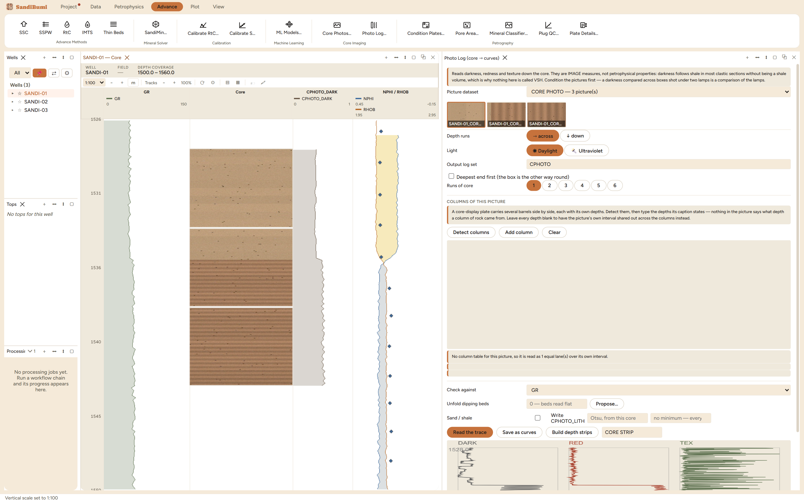

Photo Log reads curves off conditioned core photographs: darkness, redness and texture, sampled every couple of centimetres down the whole cored interval. That makes the photograph the densest measurement made on the core itself, since a plug table gives a few dozen samples where a photograph gives hundreds, and the traces it writes can anchor a depth registration, sit beside GR in a layout, or flag intervals worth a closer look. Reach for it after conditioning, never before.

Reads darkness, redness and texture down the core. They are IMAGE measures, not petrophysical properties: darkness follows shale in most clastic sections without being a shale volume, which is why nothing here is called VSH.
The example read 737 samples from 3 photographs over 1528.0–1542.9 m: against GR, DARK +0.91, RED +0.94, TEX −0.08. The sign is the QC: clay is dark and clay is radioactive, so darkness and GR should rise together, and a strongly negative agreement means the box was read the wrong way up, which a correlogram cannot tell from a genuine depth error, so the pane says it in words rather than proposing a shift. TEX staying near zero here is honest too: the lower unit's laminations run along the core, and texture measures spread across the core within each slab. Saving resampled the traces onto the well's own depth frame (395 samples, 99 of them inside the cored interval) by box average:
Written on the well's own depth frame (395 samples) so modules and plots can read them. The photograph was read at about 0.020 - each stored sample is the AVERAGE of the photograph samples inside it rather than one of them picked out, which would alias.
The strips land in their own CORE STRIP dataset, each box on its own interval, "so a gap between two runs stays a gap", and the example's 10 cm barrel gaps survive into the track. Rebuilding replaces the strips in place: a lane-count experiment leaves no STRIP_1, STRIP_2 trail behind.